공유압기능사 (2007-09-16 기출문제)
1과목: 임의구분
1. 유압회로에서 유압의 점도가 높을 때 일어나는 현상이 아닌 것은?
- 관내 저항에 의한 압력이 저하된다.
- 동력손실이 커진다.
- 열 발생의 원인이 된다.
- 응답성이 저하된다.
(정답률: 73%)

2. 유압과비교한 공기압의 특징 설명으로 옳지 않은 것은?
- 에너지의 축적이 어렵다.
- 동력원의 집중이 용이하다.
- 압력제어 밸브로 과부하 안전 대책이 가능하다.
- 보수, 관리가 용이하다.
(정답률: 74%)
3. 다음 그림은 무슨 기호인가?
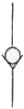
- 분류밸브
- 셔틀밸브
- 디셀러레이션밸브
- 체크밸브
(정답률: 80%)
4. 구형의 용기를 사용하며. 유실과 가스실은 금속판으로 격리되어 유실에 가스의 침입이 없고, 특히 소형의 고압용 어큐물레이터로 이용되는 것은?
- 추부하형 어큐물레이터
- 다이어프램형 어큐물레이터
- 스프링 부하형 어큐물레이터
- 블래드형 어큐물레이터
(정답률: 80%)
5. 공유압 변환기의 사용상 주의점을 열거한 것 중 맞는 것은?
- 공유합 변환기는 수직 방향으로 설치한다.
- 공유압 변환기는 액츄에이터보다 낮은 위치에 설치한다.
- 열원에 근접시켜 사용한다.
- 작동유가 통하는 배관에는 공기 흡입이 잘 되어야 한다.
(정답률: 73%)
6. 실린더의 귀환행정시 일을 하지 않을 경우 귀환속도를 빠르게하여 시간을 단축시킬 필요가 있을 때 사용하는 밸브는?
- 셔틀밸브
- 2압밸브
- 체크밸브
- 급속배기밸브
(정답률: 91%)
7. 유량제어 밸브의 사용목적과 거리가 먼 것은?
- 액추에이터의 속도제어
- 솔레노이드 밸브의 신호시간 제어
- 실리더의 배출되는 공기량 제어
- 공기식 타이머의 시간 제어
(정답률: 42%)
8. 블리드 오프 회로에서 유량제어 밸브는 어떻게 하는가?
- 실린더 입구의 분기회로에 설치한다.
- 방향제어 밸브의 드레언 포트에 연결한다.
- 실린더에 공급되는 유량을 교축한다.
- 펌프에 직접 연결하여 사용한다,
(정답률: 46%)
9. 아래에 기호를 보고 알 수 없는 것은?
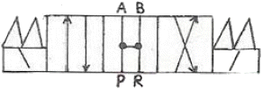
- 4포트 밸브
- 오픈 센터
- 개스킷 접속
- 3위치 밸브
(정답률: 74%)
10. 램형 실린더가 갖는 장점이 아닌 것은?
- 피스톤이 필요 없다.
- 공기 빼기 장치가 필요 없다.
- 실린더 자체 중량이 가볍다.
- 압축력에 대한 휨에 강하다.
(정답률: 67%)
11. 베인펌프에서 유압을 발생시키는 주요부분이 아닌 것은?
- 캠링
- 베인
- 로우터
- 인어링
(정답률: 69%)
12. 공압용 솔레노이드 형태의 전환밸브에서 밸브의 구체적이 전환방식은?
- 레버조작
- 룰러조작
- 전기조작
- 디텐트조작
(정답률: 57%)
13. 공압장치에 사용되는 압축공기 필터의 여과방법으로 틀린 것은?
- 원심력을 이용하여 분리하는 방법
- 충동파에 닿게하여 분리하는 방법
- 가열하여 분리하는 방법
- 흡습제를 사용해서 분리하는 방법
(정답률: 81%)
14. 회로 설계를 하고자 할 때 부가조건의 설명이 잘못된 것은 무엇인가?
- 리셋(reset) : 리셋 신호가 입력되면 모드 작동 상태는 초기위치가 된다.
- 비상정지(emergency stop) : 비상정지신호가 입력되면 대부분의 경우 전기 제어 시스템에서는 전원이 차단되나 공압 시스템에서는 모든 작업요소가 원위치 된다.
- 단속 사이클(single cycle) : 각 제어 요소들을 임의의 순서대로 작동시킬 수 있다.
- 정지(stop) : 연속 사이클에서 정지신호가 입력되면 마지막 단계까지는 작업을 수행하고 새로운 작업을 시작하지 못한다.
(정답률: 62%)
15. 다음과 같은 공압장치의 명칭은?
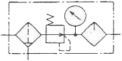
- NOT 밸브
- 유량조절 밸브
- 공기 건조기
- 공기압 조정 유니트
(정답률: 69%)
16. 다음 중 제습기의 종류가 아니 것은?
- 냉동식 제습기
- 흡착식 제습기
- 흡수식 제습기
- 공랭식 제습기
(정답률: 70%)
17. 다음 진리값과 일치하는 로직회로의 명칭은?
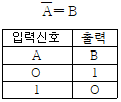
- AND회로
- OR회로
- NOT회로
- NAND회로
(정답률: 81%)
18. 감압밸브에서 1차측의 공기압력이 변동했을 때 2차측의 압력이 어느 정도 변화하는가를 나타내는 특성은?
- 크래킹특성
- 압력특성
- 감도특성
- 히스테리시스특성
(정답률: 47%)
19. 그림의 실린더는 피스톤 면적(A)가 8 cm2 이고 행정거리(s)는 10 cm 이다. 이 실리더가 전진행정을 1분 동안에 마치려면 필요한 공급 유량은 얼마인가?
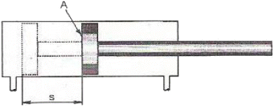
- 60cm3/min
- 70cm3/min
- 80cm3/min
- 90cm3/min
(정답률: 88%)
20. 유압유에 수분이 혼입될 때 미치는 영향이 아닌 것은?
- 작동유의 윤활성을 저하 시킨다.
- 작동유의 방청성을 저하시킨다.
- 케비테이션이 발생한다.
- 작동유의 압축성이 증가한다.
(정답률: 72%)
2과목: 임의구분
21. 작동유 탱크의 유면이 너무 낮을 경우 가장 손상을 받기 쉬운 것은?
- 유압 액추에이터
- 유압 펌프
- 여과기
- 유압 전동기
(정답률: 61%)
22. 유압 동기 회로에서 2개의 실리더가 같은 속도로 움직일수 있도록 위치를 제어해 주는 밸브는 어떤 것인가?
- 셔틀 밸브
- 분류 밸브
- 바이패스 밸브
- 서어보 밸브
(정답률: 59%)
23. 다음의 변위단계 선도에서 실리더 동작순서가 옳은 것은? (단. + : 실린더의 전진. - : 실린더의 후진)
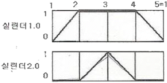
- 1.0+2.0+2.0-1.0-
- 1.0-2.0-2.0+1.0+
- 2.0+1.0+1.0-2.0-
- 2.0-1.0-1.0+2.0+
(정답률: 82%)
24. 공압 장치에 부착된 압력계의 눈금이 5kgf/cm2를 지시한다. 이 압력을 무엇이라 하는가?
- 대기압력
- 절대압력
- 진공압력
- 게이지 압력
(정답률: 78%)
25. 다음과 같은 회로의 명칭은?
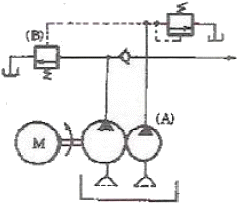
- 압력 스위치에 의한 무부하 회로
- 전환밸브에 의한 무부하 회로
- 축압기에 의한 무부하 회로
- Hi-Lo에 의한 무부하 회로
(정답률: 74%)
26. 공기압축기를 출력에 의해서 분류한 것 중 중형에 해당하는 것은?
- 0.2~12kw
- 15~75kw
- 76~150kw
- 150kw이상
(정답률: 74%)
27. 회로의 압력이 설정압을 초과하면 격막이 파열되어 회로의 최고 압력을 제한하는 것은?
- 압력 스위치
- 유체 스위치
- 유체 퓨즈
- 감압 스위치
(정답률: 82%)
28. 유압회로에서 분기회로의 압력보다 저압으로 할 때 사용하는 밸브는?
- 카운터 밸런스 밸브
- 릴리이프 밸브
- 방향제어 밸브
- 감압 밸브
(정답률: 80%)
29. 실린더의 크기를 결정하는데 직접 관련되는 요소는?
- 사용 공기 압력
- 유량
- 행정거리
- 속도
(정답률: 46%)
30. 아래의 그림과 같은 방향제어밸브의 작동방식은?
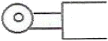
- 수동식
- 정자식
- 플런저식
- 롤러 레버식
(정답률: 85%)
31. 버튼을 누르고 있는 동안만 회로가 동작하고. 놓으면 그 즉시 전동기가 정지하는 운전법으로, 주로 공작기계에 사용하는 방법은?
- 촌동 운전
- 연동 운전
- 정역 운전
- 순차 운전
(정답률: 65%)
32. 다음 중 지시계기의 구비조건으로서 갖추어야 할 조건이 아닌 것은?
- 눈금이 균등하거나 대수 눈금일 것
- 절연내력이 낮을 것
- 튼튼하고 취급이 편리할 것
- 확도가 높고 외부의 영향을 받지 않을 것
(정답률: 86%)
33. 파형의 맥동 성분을 제거하기 위해 다이오드 정류 회로의 직류 출력단에 부착하는 것은?
- 저항
- 콘덴서
- 사이리스터
- 트랜지스터
(정답률: 53%)
34. 직류 회로에서 옴(Ohm)의 법칙을 설명한 내용 중 맞는 것은?
- 전류는 전압의 크기에 비례하고 저항값의 크기에 비례한다.
- 전류는 전압의 크기에 반비례하고 저항값의 크기에 반비례한다.
- 전류는 전압의 크기에 비례하고 저항값의 크기에 반비례한다.
- 전류는 전압의 크기에 반비례하고 저항값의 크기에 비례한다.
(정답률: 71%)
35. 내부저항 5(kΩ)의 전압계 측정범위를 10배로 하기 위한 방법은?
- 15[kΩ]의 배율기 저항을 병렬 연결한다.
- 15[kΩ]의 배율기 저항을 직렬 연결한다.
- 45[kΩ]의 배율기 저항을 병렬 연결한다.
- 45[kΩ]의 배율기 저항을 직렬 연결한다.
(정답률: 66%)
36. 그림과 같은 주파수 특성을 갖는 전기 소자는?
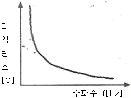
- 저항
- 코일
- 콘덴서
- 다이오드
(정답률: 70%)
37. 다음 측정단위 중 1 [kw]는 몇 [w]인가?
- 10 [W]
- 100 [W]
- 1000 [W]
- 10000 [W]
(정답률: 90%)
38. 직류 전동기를 기동할 때에 전기자 회로에 직렬로 연결하여 기동 전류를 억제시켜, 속도가 증가함에 따라 저항을 천천히 감소시키는 것을 무엇이라 하는가?
- 기동기
- 정류자
- 브러시
- 제어기
(정답률: 39%)
39. 다음 중 시퀸스 제어에 속하는 것은?
- 정성적 제어
- 정량적 제어
- 되먹임 제어
- 닫힌 루프 제어
(정답률: 64%)
40. 다음에 열거한 것 중 조작 기기는 어느 것인가?
- 솔레노이드 밸브
- 리밋 스위치
- 광전 스위치
- 근접 스위치
(정답률: 56%)
3과목: 임의구분
41. 코일이 여자될 때마다 숫자가 하나씩 증가하며 계수 표시를 하는 것은?
- 기계식 카운터
- 전자식 카운터
- 적산 카운터
- 프리셋 카운터
(정답률: 53%)
42. 실효값이 E [V]인 정현파 교류전압의 최대값은 얼마인가?
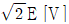
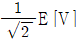
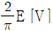
- 2E [V]
(정답률: 51%)
43. Y결선으로 접속된 3상회로에서 선간전압은 상전압의 몇 배인가?
- 2 배
- √2 배
- 3 배
- √3 배
(정답률: 81%)
44. 직류 200 [V], 1000 [W]의 전열기에 흐르는 전류는 얼마인가?
- 0.5 [A]
- 5 [A]
- 50 [A]
- 10 [A]
(정답률: 83%)
45. 유도 전동기에서 동기 속도를 결정하는 요인은?
- 위상 - 파형
- 홀수 - 주파수
- 자극수 - 주파수
- 자극수 - 전기각
(정답률: 68%)
46. 배관도면에서 글로브 밸브에서 나사이음 할 때 도시 기호는?
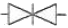
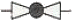
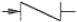
(정답률: 66%)
47. 다음 용접도시기호를 올바르게 설명한 것은?
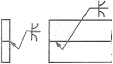
- 양면 U 형 이음 맞대기 용접
- 한쪽 U 형 이음 맞대기 용접
- K 형 이음 맞대기 용접
- 양면 J 형 이음 맞대기 용접
(정답률: 53%)
48. 물체의 구멍, 홈 등 특정 부분만의 모양을 도시하는 것으로 보기 그림과 같이 그려진 투상도의 명칭은?
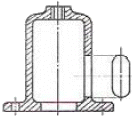
- 회전 투상도
- 보조 투상도
- 부분 확대도
- 국부 투상도
(정답률: 78%)
49. 도면의 척도란에 5:1 로 표시되었을 때 의미로 올바른 설명은?
- 축척으로 도면의 형상 크기는 실물의 1/5이다.
- 축척으로 도면의 형상 크기는 실물의 5배 이다.
- 배척으로 도면의 형상 크기는 실물의 1/5 이다.
- 배척으로 도면의 형상 크기는 실물의 5배 이다.
(정답률: 70%)
50. 보기 도면에서 전체길이인 ( )의 치수는?
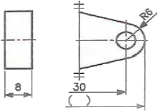
- 36
- 42
- 66
- 72
(정답률: 61%)
51. 보기와 같은 제3각 정투상도인 정면도 평면도에 가장 적합한 우측면도는?
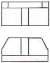
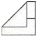
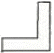
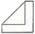
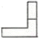
(정답률: 74%)
52. 파형의 가는 실선 또는 지그재그선을 사용하는 선은?
- 회전단면선
- 파단선
- 절단선
- 기준선
(정답률: 72%)
53. 다음 중 운동용 나사가 아닌 것은?
- 관용 나사
- 사각 나사
- 사다리꼴 나사
- 불나사
(정답률: 60%)
54. 가로 탄성 계수를 바르게 나타낸 것은?
- 굽힘 응력/전단 변형률
- 전단 응력/수직 변형률
- 전단 응력/전단 변형률
- 수직 응력/전단 변형률
(정답률: 64%)
55. 지름 D(mm)인 코일스프링에 하중 P(kgf)를 가할 때 δ(mm)의 변위를 일으키는 스프링 상수 K(kgf/mm)는?
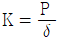
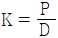
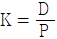
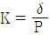
(정답률: 50%)
56. 맞물림 클러치의 턱 모양이 아닌 것은?
- 톱니형
- 사다리꼴형
- 반달형
- 사각형
(정답률: 63%)
57. 롤링 베어링의 장점이 아닌 것은?
- 과열의 위험이 없다.
- 규격이 정해진 품종이 풍부하고 교환성이 좋다.
- 기계의 소형화가 가능하다.
- 소음 및 진동이 없고, 설치와 조립이 쉽다.
(정답률: 46%)
58. 벨트가 회전하기 시작하여 동력을 전달하게 되면 인장측의 장력은 커지고, 이완측의 장력은 작아지게 되는데 이 차를 무엇이라 하는가?
- 이완 장력
- 허용 장력
- 초기 장력
- 유효 장력
(정답률: 43%)
59. 키의 길이가 50 mm, 접선력은 6000 kgf, 키의 전단 응력이 20kgf/mm2일 때 키의 폭은?
- 6 mm
- 30 mm
- 12 mm
- 9 mm
(정답률: 58%)
60. 다음 중 브레이크의 종류가 아닌 것은?
- 블록
- 밴드
- 원판
- 토션바
(정답률: 77%)